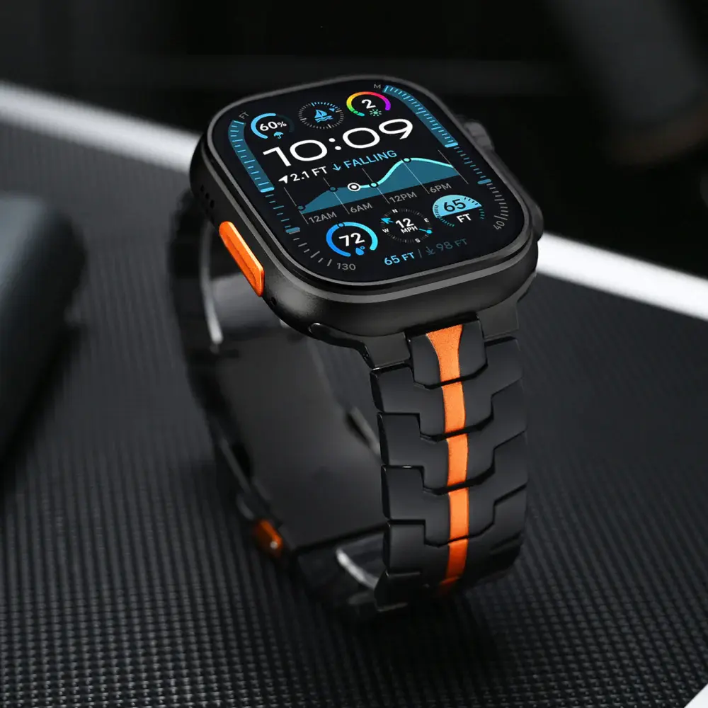
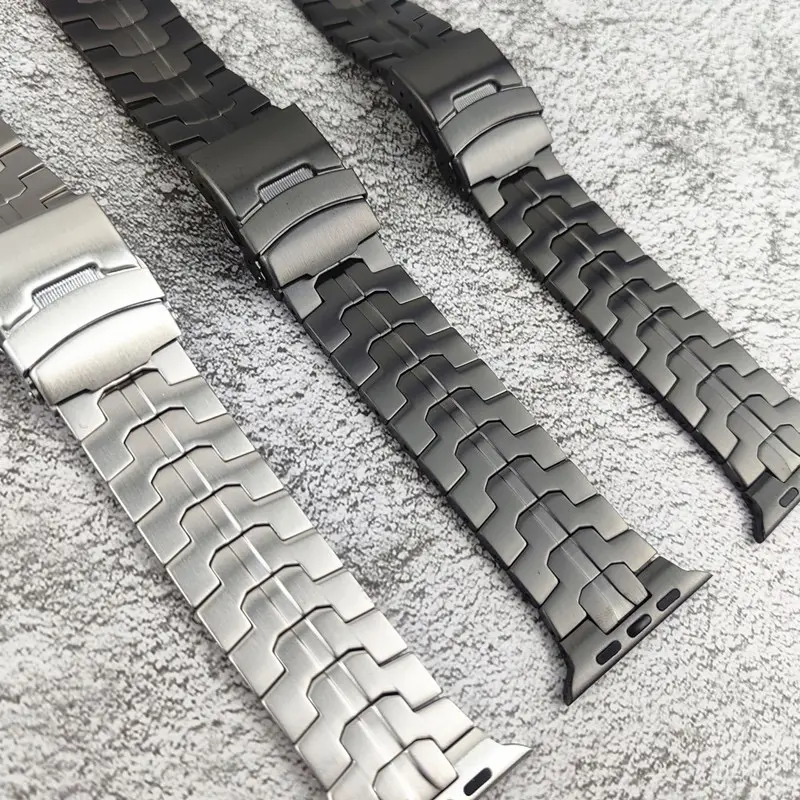
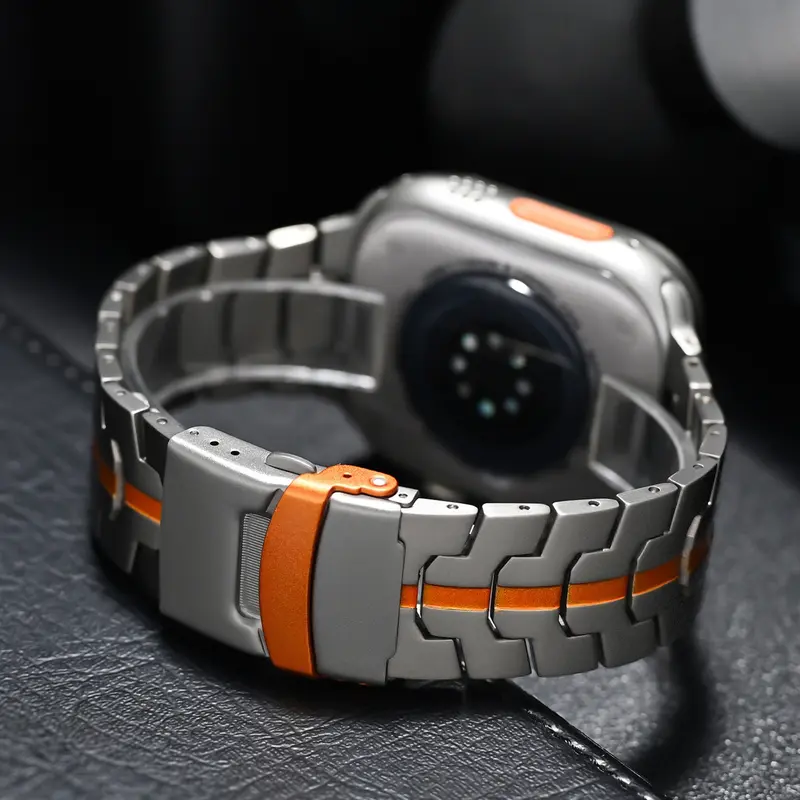
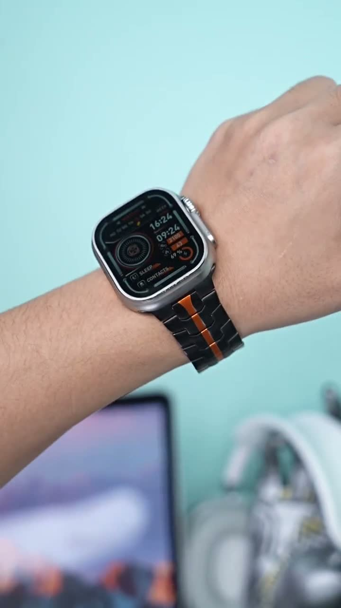
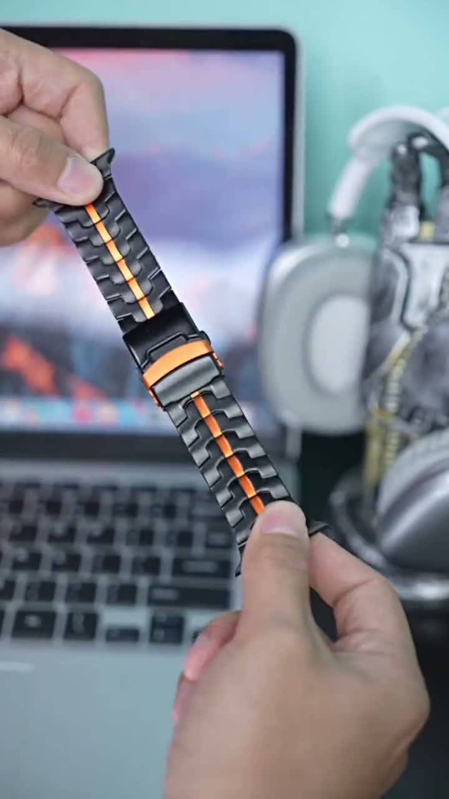
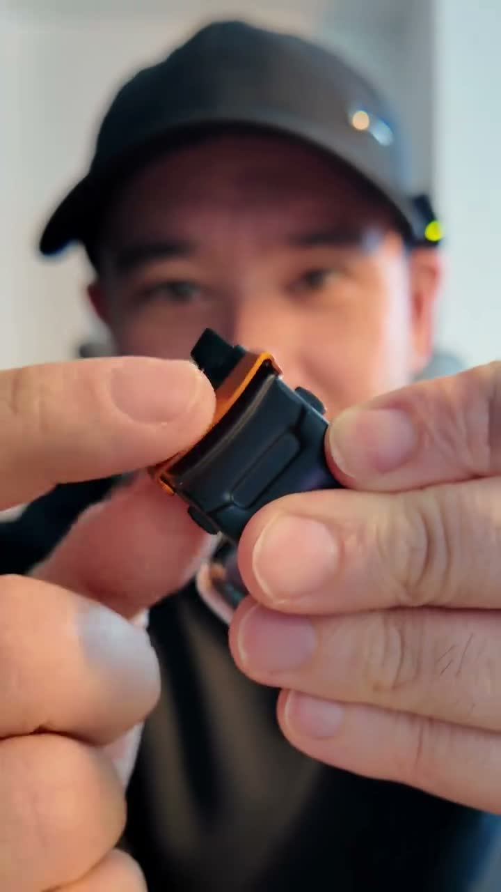

Creator Collaboration Brief
It looks like a new watch. It is only the band.
Use the black-and-orange contrast, close-up metal details, and the wrist transformation to create an instant visual upgrade viewers can understand without explanation.



Main Video Selling Points
How to film the first 3 seconds
Do not start with packaging. Put the finished look on screen immediately, then prove the details that make it feel premium.



Content Production Sequence
Move from a before-and-after transformation to a visual signature, detail proof, lifestyle context, and a clear reason to click.
Start with the Before and After
Amplify the Black-and-Orange Signature
Show the Complete Wrist Look
Build Trust with Details
Add Lifestyle Context
Finish with Color Choice + CTA
Restricted Wording
You can say
- compatible with apple watch
- smart watch band
Do not say
- apple watchband
Creator Deliverable Checklist
Deliver vertical TikTok videos, ideally 20–30 seconds each, in a natural creator style. Show the finished wrist look in the first two seconds, include close-up detail shots, demonstrate the clasp, and end with a clear product-link call to action.